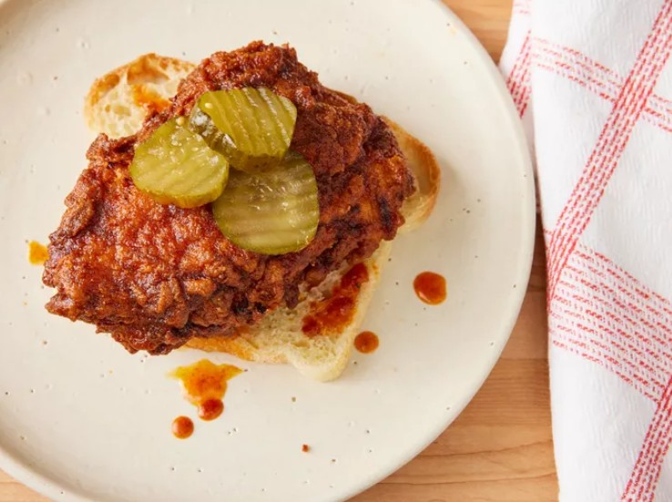

Hot Chicken

Chef John's Nashville Hot Chicken
Mouthwateringly, ultra-crispy, fiery fried chicken with a cayenne-infused glaze, and by 'glaze' I mean melted butter and lard. Serve chicken pieces on white bread and brush with extra sauce if you like. Serve with pickles.
Ingredients
- 1 whole chicken cut into 8 pieces
- 1 cup buttermilk
- ¼ cup pickle brine
- 2 tablespoons Louisiana-style hot sauce
- 1 large egg
- 2 cups all purpose flour
- 2 teaspoons salt
- ¼ cup butter
- ¼ cup lard
- 2 tablespoons cayenne pepper
- 1 tablespoon packed light brown sugar
- 1 teaspoon paprika
- ½ teaspoon garlic powder
- ½ teaspoon kosher salt
- ½ teaspoon freshly ground black pepper
- 1 cup vegetable oil for frying, or as needed
Steps
- Arrange chicken pieces in a large bowl.
- Whisk buttermilk, pickle brine, hot sauce, and egg together in a mixing bowl. Pour marinade over chicken and stir to ensure each piece is thoroughly coated. Cover and let chicken marinate in refrigerator 2 to 4 hours.
- Mix flour and salt together in a shallow flat dish. Remove chicken from marinade and blot with paper towels. Reserve marinade. Toss chicken in flour until thoroughly coated. Return chicken to marinade, coating all sides; remove chicken from marinade allowing excess to drip back into the bowl. Coat the chicken once again in flour mixture. Place on a rack. Repeat with all chicken pieces. Allow to sit out about 15 minutes to allow coating to dry out a bit.
- Place butter and lard in a large pot. Add cayenne pepper, brown sugar, paprika, garlic powder, kosher salt, and black pepper. Place over medium-high heat. Cook and stir until fats melt. Remove from heat; keep sauce warm.
- Fill cast iron skillet about 1/3 of the way with vegetable oil. Heat oil to 350 degrees F over medium-high heat. Carefully place chicken into hot oil, skin side down. Maintain an oil temperature of 325 degrees F, adjusting heat as need. Fry until instant read thermometer reads 160 degrees F, 8 to 10 minutes per side.
- Transfer chicken to a rack to drain. Brush with the sauce on both sides.